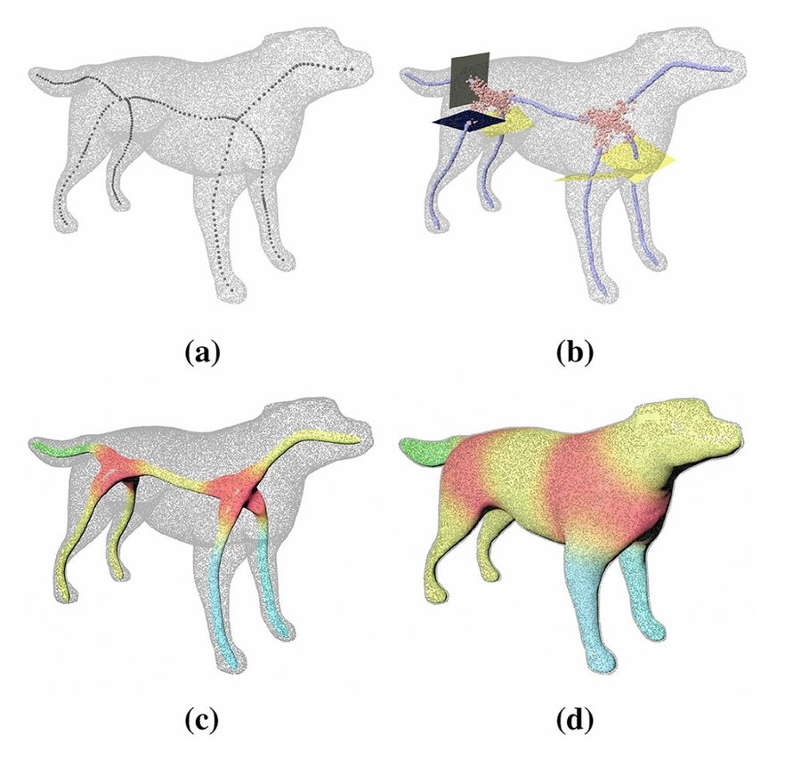
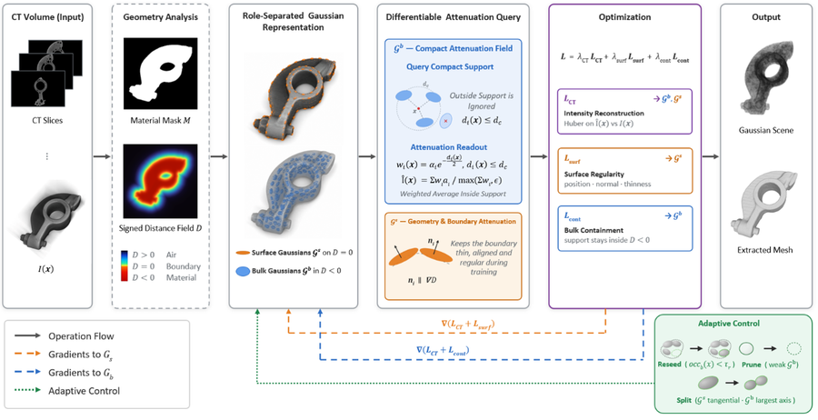
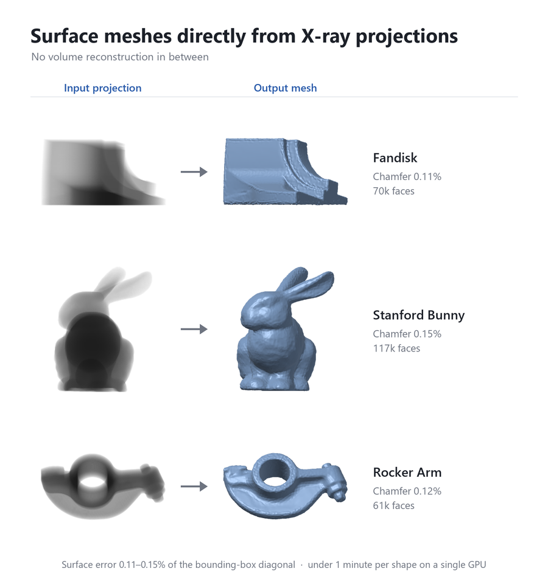
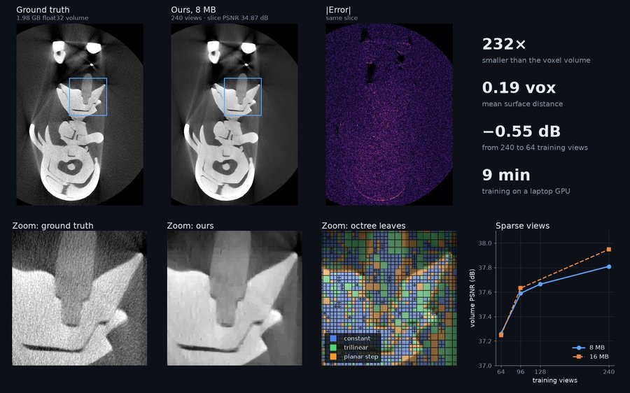
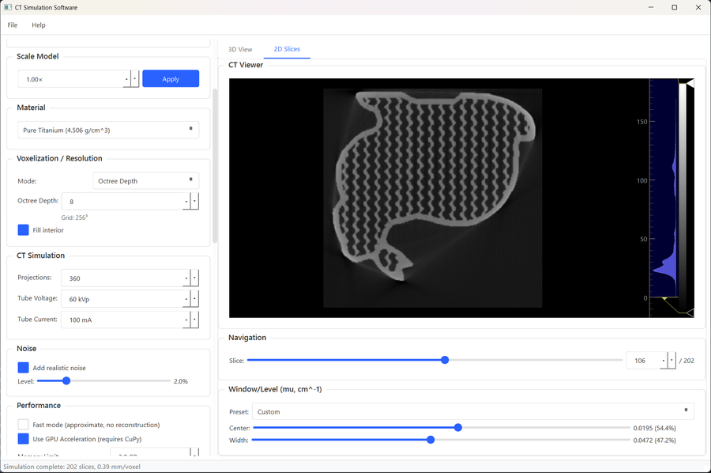
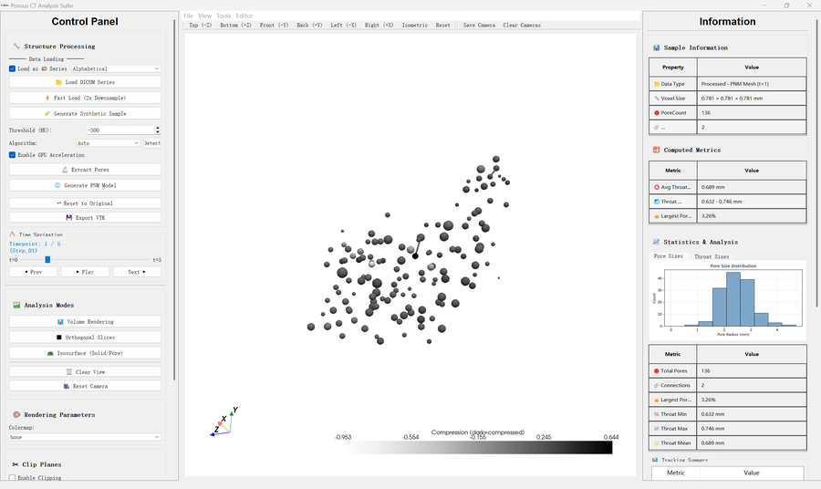
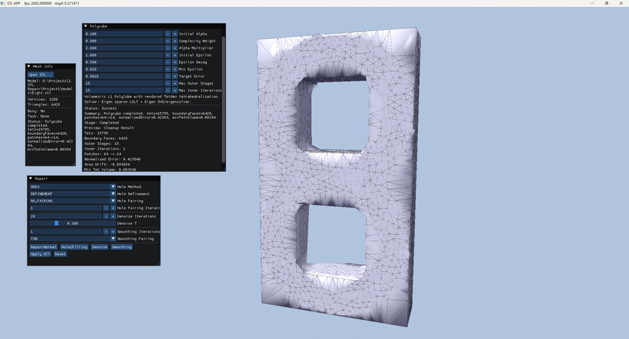

Profile
I am a graduate student at the University of Tokyo, working on high-performance industrial CT representation under the supervision of Prof. Yukie Nagai.
My research interests center on 3D Reconstruction, Computer Vision, Geometry Processing, and High-Performance Computing. Specifically, I focus on:
- 3D geometry processing and point-cloud surface reconstruction
- 3D Gaussian Splatting and object-level segmentation
- Real-time rendering, volumetric representations, and simulation
- CUDA/GPU acceleration and memory optimization for GPU/ML systems
My work aims to bridge algorithmic research and practical system development, building efficient and scalable tools for 3D reconstruction, rendering, and analysis, with applications ranging from industrial CT to real-time graphics.
I am open to collaborations and opportunities in 3D vision, graphics, and GPU computing. Feel free to reach out at derulozsy@gmail.com.
Publications

An automatic framework for quadrilateral surface reconstruction with partitions from 3D point clouds
Shuyang Zhu · Youlong Li · Jizhao Liu · Bin Li*
- Inspired by Polycube Parameterization, we propose a 4-step framework for reconstructing 3D point cloud models into quadrilateral meshes with smooth partitions.
- The resulting meshes faithfully preserve the original geometric features of the input point cloud, making them well-suited for applications such as rigging.

CTGS: Hybrid Gaussian Splatting for Compact Industrial CT Representation
Shuyang Zhu* · Yukie Nagai
- An industrial CT algorithm that converts CT volumes into a compact Gaussian Splatting representation.
- Focuses on internal CT structures, including voids and variations in material density, and surface shape alignment to support downstream analysis such as surface extraction.
- Uses a hybrid model of surface and bulk Gaussians to represent material boundaries and internal attenuation, respectively; file size can be reduced to about 1/35 of the original DICOM data in the best case, with extracted meshes achieving a normalized Chamfer-L1 of about 0.23–0.50%.
Projects

X-ray Projection-to-Mesh (Ongoing)
Topology-Adaptive Surface Reconstruction
- A pipeline that generates watertight surface meshes directly from X-ray projections, without reconstructing a volume first.
- Topology can change during optimization: the mesh can split into several parts, grow through-holes, or open internal cavities, without knowing the object’s topology in advance.
- Recovers the correct topology on every test shape. Surface error is about 0.1–0.15% of the bounding-box diagonal, and each shape fits in under a minute with native CUDA acceleration.

Adaptive Octree CT Reconstruction from Sparse Projections (Ongoing)
Compact Projection-Domain Volume Representation
- A pipeline that reconstructs CT volumes directly from X-ray projections into a compact adaptive octree, for storing and analyzing large industrial CT scans.
- Focuses on sharp material interfaces, thin gaps and accurate surface extraction under a fixed byte budget and sparse views: at 8 MB (232× smaller than the 1.98 GB voxel volume) it reaches 37.8 dB volume PSNR and 0.19-voxel mean surface distance, and loses only 0.55 dB when training views drop from 240 to 64.
- Uses typed octree leaves (constant, trilinear, planar step) with exact CUDA ray integration, held-out-view refinement decisions and an edge-preserving regularizer; one run takes about 9 minutes on a laptop GPU.

CT Simulation Software
High-Accuracy and Customizable CT Simulation
- Built software to simulate CT scans from 3D models with physical accuracy.
- Included lattice generation, defect injection, physics-based compression simulation using FEM, and GPU dynamic batching for large-volume processing.

Porous CT Processor
Pore Network Modeling + 4D CT Analysis
- Designed an analysis and visualization suite with GUI for porous CT datasets.
- Integrated rendering, pore network modeling (PNM), 4D tracking of pore evolution, and GPU acceleration using CuPy.

STL Processor
DirectX 12 Mesh Processing & Visualization
- Developed a DirectX 12 application for STL mesh repair and visualization.
- Implemented polycube parameterization, hole filling, normal correction, denoising, and smoothing.
- Additional Coursework Projects
Implemented single-cycle and five-stage pipeline CPU architectures in Vivado coursework projects. Created Godot visualizations for search, graph, and tree algorithms.
Work Experience
- 2026.08 – Present:Tencent, Game Research & Development Intern, Engine Research.
- Led the development of a 4D Gaussian Splatting (4DGS)-based volumetric smoke rendering solution for UE5. Owned the full process from technical research and rendering architecture design to core implementation and performance optimization, building a new real-time volumetric rendering pipeline that supports global illumination and shadow casting and matches the look of the original VDB / Niagara data.
- Achieved high-performance real-time rendering of about 100K Gaussian primitives. Optimized GPU compute, data representation and rendering cost, reaching about 55 MB of GPU memory per Actor and about 1.5 ms for full-screen smoke at 2K resolution.
- 2026.07:Polyphony Digital, Engineer Intern.
- Independently developed an interactive 3DGS segmentation tool based on FlashSplat. Handled algorithm research, solution design, core implementation and validation; without pre-baked segmentation attributes, the tool extracts object-level segments from trained 3DGS assets within seconds through interactive point selection.
- Designed and implemented object size calibration for the PS5 platform. From a reference segment and its real length specified in a 2D view, designed the scale-solving and model-scaling flow that maps in-game 3D objects to real physical dimensions, and implemented and validated it on a PS5 development kit.
- 2026.05 – Present:Synesthesias, Technical Development Intern.
- Led end-to-end development of a 3D point-cloud wall inclination measurement algorithm. Owned algorithm design, implementation, optimization and accuracy validation. Combined SVD plane fitting, depth layering and connected-component analysis to extract the main wall surface from point clouds with vegetation occlusion and protrusions, and used robust regression to measure inclination with millimeter-level accuracy.
- Developing features for CityVision, a 3D urban landscape design tool. Built on Unity and PLATEAU 3D city models; responsible for requirements analysis, interaction design, geometric computation, implementation and testing of features such as interactive area measurement.
- 2026.04 – .05:Fixstars, Year-round Intern.
- Led low-VRAM inference optimization for the Open-Sora 2 video generation model. Owned VRAM bottleneck analysis, optimization design, core implementation and performance validation, combining lazy loading, unified memory and cache residency management to optimize weight loading and GPU memory use.
- Reduced peak inference VRAM from 39.7 GB to 20.93 GB (about 47% lower). Without model quantization, the model now runs on a single 24 GB GPU, which it previously could not.
Education
- 2025.10 – Present:M.E. candidate, Nuclear Engineering and Management, the University of Tokyo, Tokyo, Japan.
- 2024.10 – 2025.03:Special Auditor, Dept. of Electronics and Information Engineering, Hokkaido University, Sapporo, Japan.
- 2021.09 – 2025.07:B.E. in Digital Media Technology, Lanzhou University, Lanzhou, China.
Awards
- 2025:The University of Tokyo Fellowship.
- 2023:9th "Internet+" Innovation and Entrepreneurship Competition, Gansu Province Gold Award.
- 2022:13th BlueBridge Cup, Gansu Province Third Prize.
- 2022–2024:Lanzhou University Scholarship.
个人简介
你好，我是朱舒阳，目前于东京大学工学系研究科就读（M2），在长井超慧准教授的指导下，研究工业 CT 数据的三维重建与高效表示。
技术方向：
- 三维重建与几何处理：点云表面重建、网格处理
- 3D Gaussian Splatting：表示、渲染与物体级分割
- 实时渲染：体渲染、UE5 渲染管线
- GPU 高性能计算：CUDA 加速、显存优化
欢迎三维视觉、计算机图形学与 GPU 计算方向的工作机会与科研合作。联系邮箱：derulozsy@gmail.com
论文发表
An automatic framework for quadrilateral surface reconstruction with partitions from 3D point clouds
Shuyang Zhu · Youlong Li · Jizhao Liu · Bin Li*
- 受 Polycube 参数化启发，提出一套四步框架，将三维点云自动重建为分区平滑的四边形网格：一维骨架提取 → 骨架驱动分割 → 初始网格生成 → 进化式重建。
- 重建网格能较好保留原始几何特征，可直接用于骨骼绑定等下游任务。
CTGS: Hybrid Gaussian Splatting for Compact Industrial CT Representation
Shuyang Zhu* · Yukie Nagai
- 将工业 CT 体数据转换为紧凑的 Gaussian Splatting 表示。
- 用“表面高斯 + 体积高斯”的混合模型，分别刻画材料边界和内部密度分布。空洞、密度变化等内部结构都能保留，便于后续的表面提取与分析。
- 存储量最低可压缩到原始 DICOM 数据的约 1/35，提取网格的归一化 Chamfer-L1 为 0.23%～0.50%。
项目经历
X 射线投影到表面网格（进行中）
拓扑自适应表面重建
- 跳过体数据重建，直接从 X 射线投影优化出水密的表面网格。
- 优化过程中拓扑可以自动变化，比如分裂成多个部件、生成通孔或内部空腔，不需要预先知道物体的拓扑。
- 所有测试形状的拓扑都被正确恢复。表面误差约为包围盒对角线的 0.1%～0.15%，基于原生 CUDA 实现，单个形状拟合不到 1 分钟。
基于自适应八叉树的稀疏视角 CT 重建（进行中）
紧凑的投影域体数据表示
- 直接从 X 射线投影重建出紧凑的自适应八叉树体数据，用于大规模工业 CT 数据的存储与分析。
- 在固定存储预算和稀疏视角下，重点保证材料界面清晰、细缝不丢失、表面提取准确。
- 8 MB 存储（约为 1.98 GB 原始体素数据的 1/232）下，体积 PSNR 达 37.8 dB，平均表面距离 0.19 体素。
- 训练视角从 240 减到 64，PSNR 仅下降 0.55 dB。
- 八叉树叶节点支持常数、三线性、平面阶跃三种类型，配合精确的 CUDA 射线积分、基于留出视角的细分决策和保边正则。笔记本 GPU 上单次训练约 9 分钟。
CT 模拟软件
高精度、可定制的 CT 仿真
- 开发了一套从三维模型出发、按物理规律模拟 CT 扫描的软件。
- 支持晶格结构生成、缺陷注入和基于有限元（FEM）的压缩仿真，并用 GPU 动态批处理处理大体积数据。
多孔介质 CT 处理器
孔隙网络建模与 4D CT 分析
- 开发了带图形界面的多孔介质 CT 数据分析与可视化工具。
- 集成三维渲染、孔隙网络建模（PNM）和孔隙演化的 4D 追踪，并用 CuPy 实现 GPU 加速。
STL 处理工具
基于 DirectX 12 的网格处理与可视化
- 基于 DirectX 12 开发的 STL 网格修复与可视化程序。
- 实现了 Polycube 参数化、孔洞修补、法向修正、去噪与平滑。
- 课程项目：在 Vivado 中实现单周期与五级流水线 CPU；用 Godot 制作搜索、图与树算法的可视化演示。
工作经历
- 2026.08 – 至今：腾讯，Game Research & Development Intern, Engine Research。
- 主导基于 4D Gaussian Splatting（4DGS）的 UE5 体积烟雾渲染方案研发。负责从技术调研、渲染架构设计到核心实现及性能优化的完整流程，构建新的实时体积渲染管线，支持全局光照与阴影投射，并实现与原始 VDB / Niagara 数据一致的视觉表现。
- 实现十万量级高斯基元的高性能实时渲染。针对 GPU 计算、数据表示及渲染开销开展优化，单个 Actor 显存占用约 55 MB，在 2K 分辨率下实现全屏烟雾约 1.5 ms 的渲染耗时。
- 2026.07：Polyphony Digital，Engineer Intern。
- 独立负责基于 FlashSplat 的 3DGS 交互式分割工具研发。完成算法调研、方案设计、核心实现与功能验证，无需预烘焙分割属性，即可通过交互式点选，在数秒内从训练完成的 3DGS 资产中提取物体级分割结果。
- 负责 PS5 平台物体尺寸标定功能的设计与实现。基于用户在 2D 视图中指定的参考线段及真实长度，设计尺度解算与模型缩放流程，实现游戏内三维物体与真实物理尺寸的对应，并在 PS5 开发机上完成实现与验证。
- 2026.05 – 至今：Synesthesias，技术开发实习生。
- 主导三维点云墙面倾斜测量算法的端到端研发。负责算法设计、实现、优化及精度验证。结合 SVD 平面拟合、深度分层与连通域分析，解决植被遮挡、墙面凸起等复杂点云条件下的主体墙面提取问题，并通过稳健回归实现毫米级精度的倾斜测量。
- 负责 CityVision 三维城市景观设计工具的功能研发。基于 Unity 与 PLATEAU 3D 城市模型，承担交互式面积测量等功能的需求分析、交互设计、几何计算、程序实现及测试。
- 2026.04 – .05：Fixstars，通年实习生。
- 主导 Open-Sora 2 视频生成模型的低显存推理优化。负责显存瓶颈分析、优化方案设计、核心实现及性能验证，结合延迟加载（Lazy Loading）、统一内存（Unified Memory）与缓存驻留管理，优化模型权重加载及 GPU 显存使用。
- 将推理峰值显存从 39.7 GB 降至 20.93 GB，降低约 47%。在无需模型量化的条件下，使原本无法在 24 GB 显卡上运行的模型实现单卡推理。
教育经历
- 2025.10 – 至今：修士在读，东京大学 工学系研究科 原子力国际专攻（核工程与管理），日本东京。
- 2024.10 – 2025.03：特别听讲生（访问学习），北海道大学 工学部 信息电子工学科，日本札幌。
- 2021.09 – 2025.07：工学学士，兰州大学 数字媒体技术专业（新闻与传播学院），中国兰州。
荣誉奖项
- 2025：东京大学 Fellowship 奖学金。
- 2023：第九届“互联网+”创新创业大赛 甘肃省金奖。
- 2022：第十三届蓝桥杯 甘肃省三等奖。
- 2022–2024：兰州大学奖学金。
プロフィール
東京大学の大学院生として、長井超慧准教授の指導のもと、高性能な工業用 CT 表現に関する研究に取り組んでいます。
研究関心は3D 再構成、コンピュータビジョン、幾何処理、高性能計算を中心としており、具体的には以下の分野に取り組んでいます：
- 3D 幾何処理と点群表面再構成
- 3D Gaussian Splatting と物体単位のセグメンテーション
- リアルタイムレンダリング、ボリューム表現、シミュレーション
- CUDA/GPU 高速化と GPU/ML システムの GPU メモリ最適化
アルゴリズム研究と実用的なシステム開発を橋渡しし、工業用 CT からリアルタイムグラフィックスまで、3D 再構成・レンダリング・解析のための効率的でスケーラブルなツールの開発を目指しています。
3D ビジョン、グラフィックス、GPU 計算分野での共同研究や就業機会を歓迎しています。お気軽にご連絡ください：derulozsy@gmail.com
発表
An automatic framework for quadrilateral surface reconstruction with partitions from 3D point clouds
Shuyang Zhu · Youlong Li · Jizhao Liu · Bin Li*
- Polycube パラメータ化に着想を得て、三次元点群モデルをなめらかなパーティション付き四辺形メッシュに再構成する 4 ステップのフレームワーク（1D スケルトン抽出・スケルトン駆動分割・初期メッシュ生成・進化的再構成）を提案。
- 生成されたメッシュは元の点群の幾何学的特徴を忠実に保持し、スキニングなどの用途に適しています。
CTGS: Hybrid Gaussian Splatting for Compact Industrial CT Representation
Shuyang Zhu* · Yukie Nagai
- CT ボリュームをコンパクトな Gaussian Splatting 表現へ変換する、工業用 CT アルゴリズムです。
- 空隙や材料密度の変化などの CT 内部構造と表面形状の整合に着目し、表面抽出などの後続の解析ワークフローに適しています。
- 表面ガウスと体積ガウスのハイブリッドモデルを採用し、材料境界と内部の減衰分布をそれぞれ表現します。ファイルサイズは最小で元の DICOM データの約 1/35 となり、抽出メッシュの正規化 Chamfer-L1 は約 0.23～0.50% です。
プロジェクト
X 線投影から表面メッシュへ（進行中）
トポロジー適応型表面再構成
- ボリュームを先に再構成することなく、X 線投影から直接、水密な表面メッシュを生成するパイプラインです。
- 最適化中にトポロジーを変更でき、メッシュが複数の部分に分かれたり、貫通穴や内部空洞が形成されたりします。物体のトポロジーを事前に知る必要はありません。
- すべてのテスト形状で正しいトポロジーを復元しました。表面誤差はバウンディングボックス対角線の約 0.1～0.15%で、ネイティブ CUDA により各形状を 1 分未満でフィッティングできます。
適応八分木による疎投影 CT 再構成（進行中）
コンパクトな投影領域ボリューム表現
- X 線投影から CT ボリュームを直接コンパクトな適応八分木として再構成し、大規模な産業用 CT データの保存と解析に用いるパイプラインです。
- 材料界面の鮮明さ、細い隙間、正確な表面抽出に重点を置き、固定バイト予算と疎ビューに対応します。8 MB（1.98 GB のボクセルボリュームの 1/232）でボリューム PSNR 37.8 dB、平均表面距離 0.19 ボクセルを達成し、学習ビューを 240 から 64 に減らしても低下は 0.55 dB のみです。
- 定数・三線形・平面ステップの 3 種類の葉、厳密な CUDA レイ積分、保留ビューに基づく細分化の判定、エッジ保存正則化を組み合わせ、ノート PC の GPU で 1 回の学習は約 9 分です。
CT シミュレーションソフトウェア
高精度・カスタマイズ可能な CT シミュレーション
- 3D モデルから物理的精度で CT スキャンをシミュレートするソフトウェアを開発。
- 格子構造生成、欠陥注入、FEM を用いた物理ベースの圧縮シミュレーション、大規模ボリューム向けの GPU 動的バッチ処理を含みます。
多孔質 CT プロセッサ
孔隙ネットワークモデリング + 4D CT 解析
- GUI を備えた、多孔質 CT データの解析・可視化スイートを設計。
- レンダリング、孔隙ネットワークモデリング（PNM）、孔隙進化の 4D 追跡、CuPy による GPU 高速化を統合しています。
STL プロセッサ
DirectX 12 メッシュ処理・可視化
- STL メッシュ修復と可視化のための DirectX 12 アプリケーションを開発。
- Polycube パラメータ化、穴埋め、法線補正、ノイズ除去、平滑化を実装。
- 授業関連プロジェクト
Vivado ハードウェア設計プロジェクトで単一サイクルと 5 段パイプライン CPU アーキテクチャを実装。 検索、グラフ、木アルゴリズムの Godot 可視化を作成。
職歴
- 2026.08 – 現在：テンセント、Game Research & Development Intern, Engine Research。
- 4D Gaussian Splatting（4DGS）に基づく UE5 向け体積煙レンダリング手法の研究開発を主導。技術調査、レンダリングアーキテクチャ設計からコア実装、性能最適化までを一貫して担当し、グローバルイルミネーションと影の投影に対応した新しいリアルタイム体積レンダリングパイプラインを構築。元の VDB / Niagara データと一致する見た目を実現。
- 10 万オーダーのガウシアンプリミティブを高性能にリアルタイム描画。GPU 計算、データ表現、描画コストを最適化し、1 アクターあたりの GPU メモリ使用量は約 55 MB、2K 解像度での全画面の煙の描画は約 1.5 ms。
- 2026.07：ポリフォニー・デジタル、エンジニア（インターン）。
- FlashSplat ベースの 3DGS インタラクティブセグメンテーションツールの開発を単独で担当。アルゴリズム調査、方式設計、コア実装、機能検証までを行い、セグメンテーション属性の事前ベイクなしで、クリック操作により学習済み 3DGS アセットから物体単位のセグメントを数秒で抽出。
- PS5 向けオブジェクトサイズキャリブレーション機能を設計・実装。2D ビュー上で指定された参照線分と実寸をもとに、スケール算出とモデルの拡縮処理を設計し、ゲーム内 3D オブジェクトを実際の物理サイズに対応させた。PS5 開発機上で実装・検証まで完了。
- 2026.05 – 現在：シナスタジア、技術開発インターン。
- 3 次元点群による壁面傾斜計測アルゴリズムの開発をエンドツーエンドで主導。アルゴリズム設計、実装、最適化、精度検証を担当。SVD 平面フィッティング、深度レイヤリング、連結成分解析を組み合わせ、植生による遮蔽や壁面の突起を含む点群から主壁面を抽出し、ロバスト回帰によりミリ単位の精度で傾斜を計測。
- 3D 都市景観設計ツール CityVision の機能開発を担当。Unity と PLATEAU 3D 都市モデルを基盤に、インタラクティブな面積計測などの機能について要件分析、インタラクション設計、幾何計算、実装、テストを担当。
- 2026.04 – .05：フィックスターズ、通年インターン。
- 動画生成モデル Open-Sora 2 の省メモリ推論最適化を主導。VRAM のボトルネック分析、最適化方針の設計、コア実装、性能検証を担当し、遅延ロード（Lazy Loading）、ユニファイドメモリ（Unified Memory）、キャッシュ常駐管理を組み合わせてモデル重みのロードと GPU メモリ使用を最適化。
- 推論時のピーク VRAM を 39.7 GB から 20.93 GB へ約 47% 削減。モデルの量子化なしで、従来は 24 GB GPU 上で動作しなかったモデルを単一 GPU で推論可能にした。
学歴
- 2025.10 – 現在：修士課程、東京大学 大学院工学系研究科 原子力国際専攻、東京、日本。
- 2024.10 – 2025.03：特別聴講学生、北海道大学 工学部 情報エレクトロニクス学科、札幌、日本。
- 2021.09 – 2025.07：工学学士、蘭州大学 新聞与伝播学院 デジタルメディア技術専攻、蘭州、中国。
受賞歴
- 2025：東京大学フェローシップ（University of Tokyo Fellowship）。
- 2023：第 9 回「インターネット+」イノベーション・起業コンテスト 甘粛省金賞。
- 2022：第 13 回ブルーブリッジカップ 甘粛省三等賞。
- 2022–2024：蘭州大学奨学金。